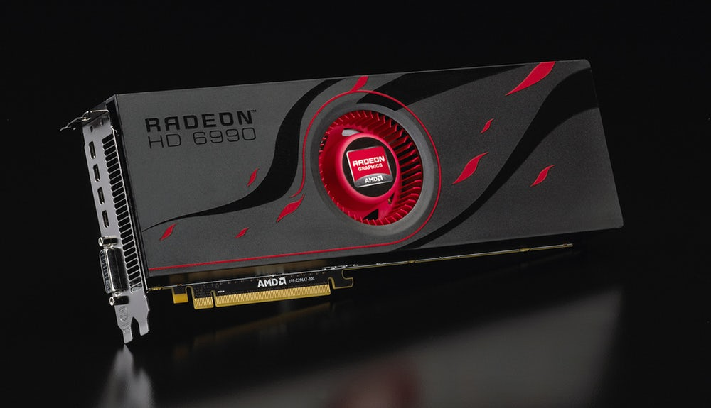
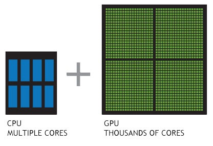
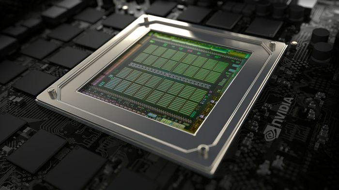

GRAPHICAL PROCESSING UNITS
(GPU)
A Graphical Processing Unit or GPU is a dedicated piece of computer hardware that is designed to efficiently process certain types of calculations efficiently that are needed for rendering intense applications such as video games or rendering videos or 3D models.
GPUs can use up to thousands of individual cores to process workloads efficiently whereas CPUs use (commonly) 4 to 8.
GPUs are designed to perform very specific tasks compared to CPUs
CPUs are responsible for a wider variety of tasks than a GPU. Because of this, they are limited to how fast and efficient they can be in comparison to a GPU.
Most modern PC CPUs have integrated graphic chips that work together with the CPU in one physical housing. These integrated GPUs are not very efficient as they are just a part of a CPU and are not recommended for complex 3D applications or intense video games. Their intended function is for video output without a dedicated GPU. They exist for convenience sake and work well in laptops and basic desktops where space is limited and cost is a considerable factor.
